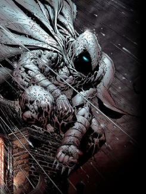

- Nascido em Chicago, Illinois, Marc Spector é o filho de um rabino americano. Ao atingir a maturidade, Marc ganhou a vida como boxeador, fuzileiro naval e mercenário. Em uma de suas muitas missões, ele trabalhou em conjunto com o mercenário africano Raoul Bushman, a serviço do Dr. Peter Alraune. Nesta missão, eles procuravam o antigo templo do deus egípcio Khonshu (ou Konshu), o deus da Lua. Quando finalmente encontram a caverna, Bushman se revela um traidor, assassinando o Dr. Alraune e deixando Spector gravemente ferido, a beira da morte.
- Encontrado por egípcios, ele é levado até o templo do próprio Khonshu para ser tratado. Quando o coração de Spector para, o deus egípcio aparece em uma visão e lhe oferece a chance de ser seu avatar na terra. Marc aceita e, decidido a se tornar um combatente do crime, ele derrota Bushman e, em seguida, volta para os E.U.A.Em Nova York, Spector cria um uniforme prateado para si (em homenagem a Khonshu) e se auto-denomina Cavaleiro da Lua, passando a atuar como vigilante da cidade. Para isso, ele assume outras três identidades:
- Steven Grant, milionário e filantropo (sua identidade "principal", usada para lhe permitir acesso à alta sociedade);
- Jake Lockley, o taxista (identidade que ele usa para ter contato com as pessoas comuns de Nova York);
- Cavaleiro da Lua, o vigilante de New York
- O Shocker (Herman Schultz) é um supervilão que aparece nos quadrinhos americanos publicados pela Marvel Comics. Criado por Stan Lee e John Romita Sr, o personagem estreou em O Espetacular Homem-Aranha #46 em março de 1967. Ele é geralmente descrito como um inimigo do super-herói Homem-Aranha, e pertence ao coletivo de adversários que compõem sua galeria de vilões.
Nos quadrinhos, Herman Schultz era originalmente um engenheiro autodidata e renomado cracker seguro que inventou um par de manoplas capazes de produzir poderosas ondas de choque vibracional. Ele incorporou essas manoplas em um traje de guerra protetor e se tornou um mercenário de aluguel. Como o Shocker, Schultz rapidamente subiu no submundo do crime de Nova York e foi empregado por vários senhores do crime, o que muitas vezes o colocou em conflito com o Homem-Aranha. Uma característica notável que diferencia o Shocker da maioria dos outros vilões do Homem-Aranha é sua busca por riqueza e uma vida confortável, em vez de vingança ou caos. Como resultado, o Shocker às vezes deixou de lado suas diferenças com o Homem-Aranha e ajudou ele ou outros heróis quando era de seu interesse.